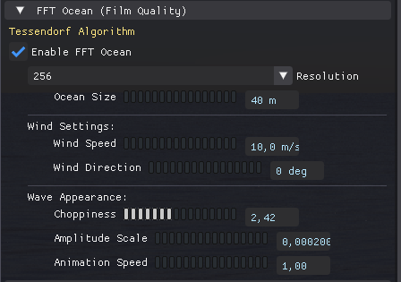

← Back to Home


Water System
The RayTrophi Water System creates realistic oceans, lakes, and pools using a hybrid approach of Procedural Noise and Film-Quality FFT simulations.
Tip: All water parameters can be animated! Click the Keyframe
Diamond next to any slider to animate it.
1. Procedural Waves
Basic Gerstner waves for calm water bodies or simple rivers.
Please save a screenshot of the Waves Panel as
manual/images/water_waves.png
| Parameter | Description |
|---|---|
| Speed | How fast the waves move across the surface. |
| Height | Vertical displacement of the waves. Set to 0 for a flat mirror surface. |
| Frequency | Density of the waves. Higher values create smaller, more rippled water. |
2. FFT Ocean (Film Quality)
This module uses Tessendorf's FFT (Fast Fourier Transform) algorithm to simulate deep ocean waves with realistic statistical distribution.

Please save a screenshot of the FFT Ocean Panel as
manual/images/water_fft.png
| Parameter | Description |
|---|---|
| Ocean Size | Physical size (in meters) of one FFT tile. |
| Wind Speed | Controls the energy spectrum. 30+ m/s is stormy. |
| Choppiness | Horizontal displacement. Too high values can cause self-intersection. |
3. Physics & Optics
Please save a screenshot of the Physics / Caustics Panel as
manual/images/water_physics.png
| Parameter | Description |
|---|---|
| Max Depth | The distance at which water becomes fully opaque. |
| Absorption Density | Turbidity/Murkiness. |
| IOR | Index of Refraction (Standard: 1.333). |
| Caustics Intensity | Brightness of light patterns on the sea floor. |